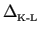
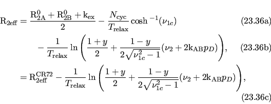
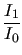

Next: The TSMFK01 2-site CPMG Up: The analytic CPMG models Previous: The reduced CR72 2-site Contents Index
This is the model for 2-site exchange on all times scales (with the constraint that pA  pB), named after Ishima and Torchia (1999). It is selected by setting the model to `IT99'. The equation is:
| Rex |  , | (11.30) |
| ωa2 | = , | (11.31) |
| R2eff | = R20 + Rex. | (11.32) |
The effective rotating frame field for a CPMG-type experiment is given by
| ω1eff = 4 |
(11.33) |
and hence
| ω1eff4 = 2304νCPMG4. | (11.34) |
The reference for this equation is:
More information about the IT99 model is available from: